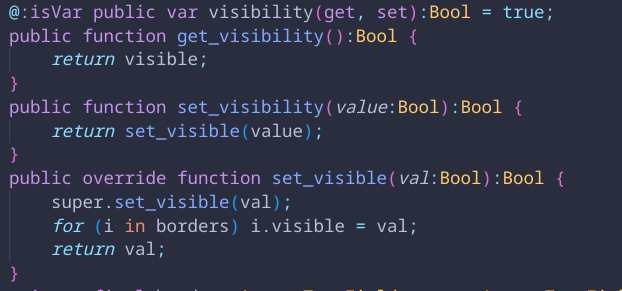
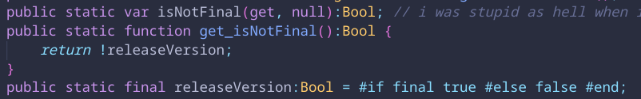

Lore Engine is a modification of the ever-popular Psych Engine modding platform for Friday Night Funkin' I've been working on on-and-off for a bit over four years now. I don't think I've ever actually explained what my goal with it is, so I figure now is as good a time as any, as I've been working on version 0.10, the first release in nearly two years.
This is what Lore Engine is supposed to be:
- It should be the ideal way to play Psych Engine mods released prior to version 0.7, with good compatibility and bug and quality of life fixes, and
- It should be a fairly extensive modding platform in its own right without getting in the way of that.
The second part isn't what I'm going to be talking about in this article, although to give myself and the people that have made amazing contributions to Lore Engine some credit, I think throughout the years, it's gotten very close to becoming just that.
What I'd like to talk about is the first point, being that Lore Engine is supposed to be broadly as compatible as possible with Psych Engine version 0.6.3. This (with a few exceptions such as fixing regressions) broadly means one thing: do not break the Psych modding API under any circumstances. I think that for the most part I have succeeded in this, in addition to adding a few new features (like Lore Engine's improvements to hscript) to and even fixing some bugs in Psych's API without breaking it. Programming with this in mind, I have also done my best not to break Lore Engine's own modding API. This has had numerous benefits, namely that you can more or less take a mod written for Lore Engine version 0.5 (if you can find one lol) and run it on 0.9 with no issues. However, this has also resulted in two big problems with maintaining and distributing Lore Engine. Here I will talk about them both and outline what I would do differently if I were to make a hypothetical "Lore Engine 2."
Problem 1: Code Bloat and Scope Creep
Because of the nature of how Lore Engine's modding API lets you read or write to basically any field and run basically any function, I do my best to keep the structure of the code (like variable names or what functions generally do) the same in order not to break anything anyone may have written. Seeing as how I went from subpar developer to slightly less subpar developer over the course of writing a lot of Lore Engine's integral features, there are times in which I rewrite things in order to get them to make more sense. However, this presents a problem, as I now have to keep both the old and new names for a lot of things. There are many times in Lore Engine when I've done this, and here I'll give two examples.

Here in the custom FPS counter, I initially had a variable named visibility handling the visibility of the FPS counter and its border. I eventually did the sensible thing of overriding the text field's visible setter to do the thing I needed, but I still needed to keep compatibility, so I had to write a lot of glue to keep it all working.

Here in the main menu state, I wanted a field that you could pull from to let you know if you were running a final version of Lore Engine or not. I initially picked the very clunky isNotFinal before settling on something a bit more understandable, but again I had to write a lot of glue to keep the old field working. Looking back writing all of this logic was also kind of stupid as I could have also just made it a final, but whatever.
These are just two examples of a pattern I unfortunately see myself having to use in Lore Engine quite often. It results in rigid and clunky code that is a lot harder to maintain or extend than I'd like it to be. This led to a lot of scope creep. Since I had to work around both Psych's code and my own legacy code, and since substantially changing any of it was both inadvisable and increasingly difficult, I ended up adding a lot of features to Lore Engine that were sort of unnecessary and, again, harder to maintain. It also made documenting anything unbelievably difficult, one of the reasons that to this day I have still yet to write any substantial documentation.
Problem 2: Lua
For quite a few reasons (it would be a lot to trace out, although I wager it's probably at least a little because of Kade Engine's modcharting system), Psych Engine's modding API primarily uses Lua scripts through the LuaJIT library. There are two reasons I really don't like this.
The first problem is that it has a lot of odd ways of doing things on account of not really integrating super well with how stuff works in HaxeFlixel. It feels very much like you're going through a clunky API to actually do anything rather than doing it directly. I haven't really seen any other engine except for Lunar Engine (hi kirby :3) try to do anything other than this, and it's very out of scope for Lore Engine, so for current Lore Engine this is how it will stay.
The second problem is it enforces a hard dependency on LuaJIT, which is a C++ library. This makes Lore Engine with correct mod support a complete non-starter for any non-C++ platform like the web. This has also made basically any Psych fork historically difficult to distribute on Linux, which is why I wager a lot of them (and Psych itself prior to version 1.0.1) don't bother with it. The version of linc_luajit that Lore Engine and most any Psych fork from around this time shipped prior to version 0.10 dynamically linked in LuaJIT, so you had to install it yourself in order to run it. This was actually a release blocker for version 0.10 as I didn't want people to have to install LuaJIT in order to run Lore Engine. In addition, since it is a C++ library, it's resulted in some bugs that have been extraordinarily hard to catch in Haxe-land.
Needless to say, I'd like to toss out LuaJIT and Lua support entirely, as there is a functional replacement for it with basically none of its downsides in the Haxe-based scripting system. Not to mention the terrible-to-maintain and clunky codebase. I mean, seriously, isNotFinal? Why on earth did I put release information into the main menu state? Why did I add borders to the custom FPS counter? And why did I duplicate the entire OpenFL text field class instead of just extending it? And why did I make it bottom justified by default? And why the hell did I even write a custom FPS counter to begin with? What on earth? Obviously, changing the code in any meaningful way like this would leave Lore Engine fundamentally unable to do either of the things it was designed for, but it would also undeniably make it a better experience for basically anyone who actually wants to make a mod now.
A conflict in my interests?
What is a jaded programmer to do?
Lore Engine 2: To Break an API
A hypothetical Lore Engine 2 for me would be a complete from-scratch rewrite of everything with no Psych Engine or earlier Lore Engine modding compatibility, and definitely no Lua. This hypothetical project would be the first time I've ever broken API before, and to be honest, it's a little scary. I've always wanted people to use what I make, and I don't have any illusions that a lot of people use Lore Engine, but I could imagine some people get a bit of use out of it for the Psych mod compatibility. The question I think I wouldn't know how to answer is that if it doesn't have that, and it doesn't have all the extra features, then…
…what's left?
In a space where I want to make something better and more useful, but making it do that would basically eject it from whatever niche it might not even be sitting in right now, then what am I supposed to do?
Is there space for a Lore Engine 2 in this world?
…
Lore Engine 1: To Make Anything
…
Does there have to be?
Was there even space for a Lore Engine 1? Has anyone truly, actually used it?
…well…
I guess I did.
That's what really matters at the end of it all, isn't it? Lore Engine at its core is a project for me. I saw shortcomings in Psych Engine and I fixed them for myself. I moved the HUD to the right by 6 pixels to center it properly. I made my silly little ports. I wrote an entire state extension system in nearly vanilla hscript just because I felt like it. I guess looking back that's really the point. It's what I wanted, and I guess it doesn't really matter if it's not what anyone else wanted. Looking back, I may look at all the things I did wrong and extremely stupid when I was making Lore Engine, but given where it got me, the friends I've made in this community, and the programming expertise I've (almost) gained from working on a thing for so long, I don't really think I would've done anything differently.
Closing
I probably won't make a Lore Engine 2. Version 0.10 will be done, hopefully soon, and I've got an idea for a little mod I want to make for it so I can finally say I actually got one done. After that… I think I'm gonna take a walk, at least for a while. I've been working on Lore Engine for over four years, and while I've had so much fun in that time, I think it's started to become something I enjoy doing a lot less. I don't think there's shame in letting a good project wind down, and I have a lot of personal things I'm gonna need to tend to soon, so I don't think I'd be able to give such a big undertaking the time it deserves anyhow.
If there's any shot you've really been following what I've been doing this whole time, I really would like to thank you. Life is difficult, and we only get one of them, and I really appreciate anyone who's spent a bit of theirs keeping up with what some random autistic girl is doing on the internet. This isn't the end of what I wanted to do, and I've got some fun stuff swirling around in my head that I really hope I get to show you one day.
If there's something I would want you to take from this, it's probably similar to the last article I wrote. Do what you think is fun! If it turns into too much or you don't like it anymore, don't be afraid to let it go. You can always pick it back up again if you want. Do what you love. Don't let anyone take that from you.